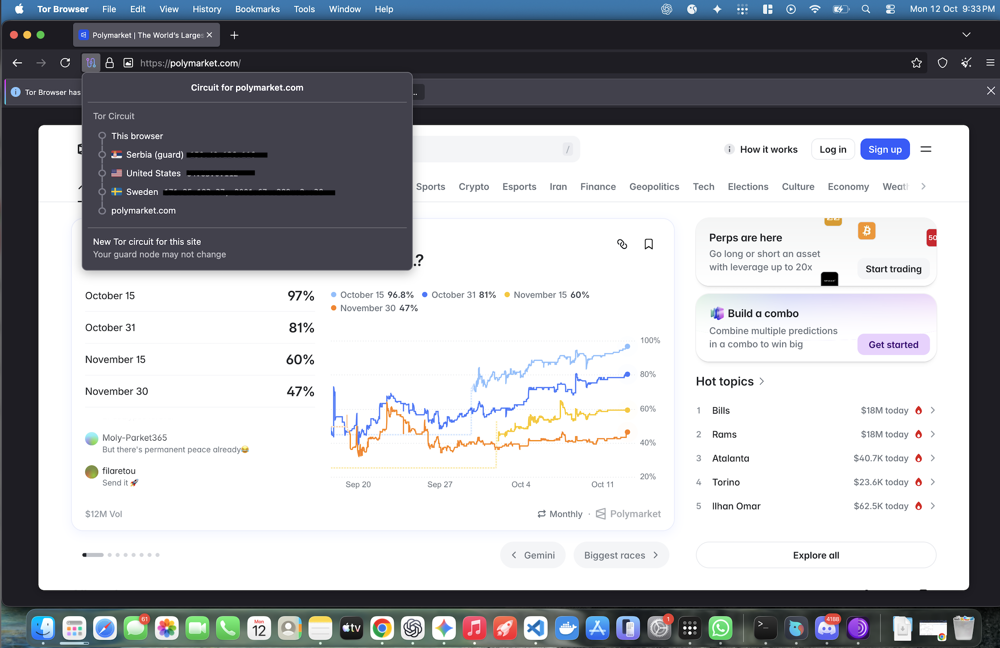
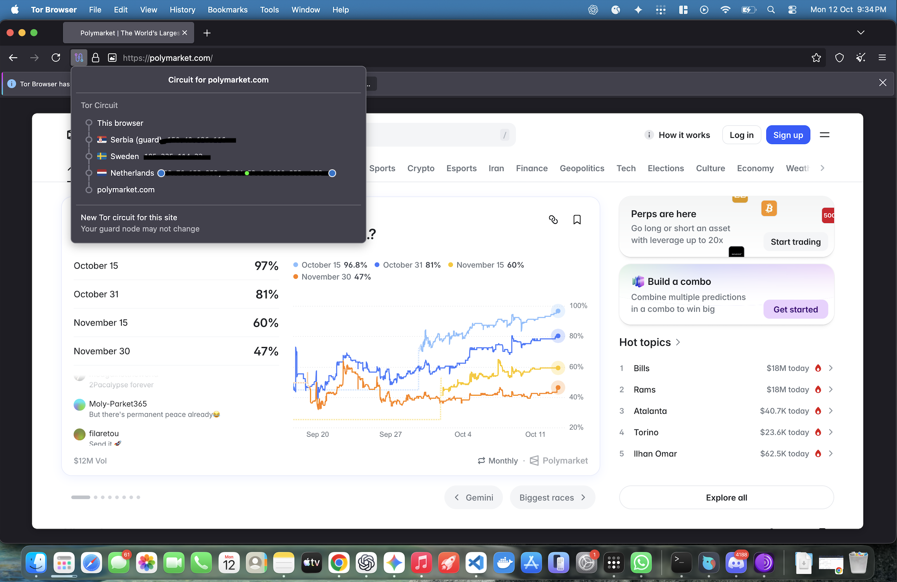
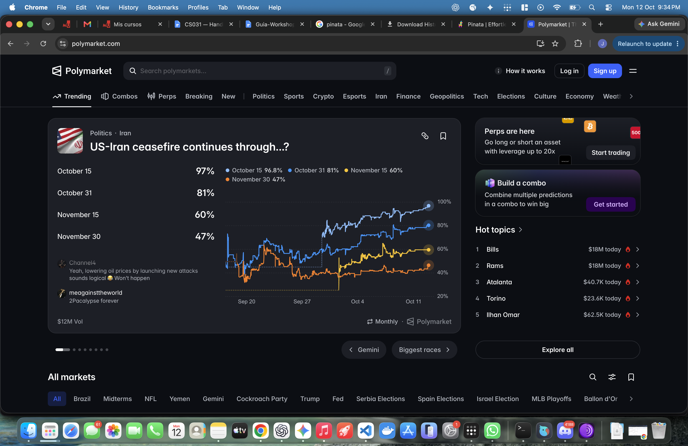

Serbia → EE. UU. → Suecia
Observé que mi circuito hacia polymarket.com pasó por un guard en Serbia, siguió por Estados Unidos y salió por Suecia.
Observé dos circuitos reales y convertí esa experiencia en un modelo de amenaza para el flujo de liberación de pagos de Pactrail.
Desde mi red de casa visité el sitio HTTPS público mostrado en las capturas. Abrí el panel de circuito, tomé una captura y pedí un circuito nuevo para el mismo sitio. Después comparé la página en Chrome.
Observé que mi circuito hacia polymarket.com pasó por un guard en Serbia, siguió por Estados Unidos y salió por Suecia.
Observé que el país del guard se mantuvo y que middle y exit cambiaron de país. Como oculté las IPs, no aseguré la identidad exacta del guard.
Comprobé que la página cargaba en un navegador normal. Con esa captura no medí la IP que recibió el servidor ni inferí anonimato por el tema visual.
Reuní mis dos capturas para comparar los países; al cambiar de pestaña muestro lo que observé antes y después.


Organicé lo que inferí sobre cada observador bajo HTTPS válido. Al seleccionarlo muestro qué podría ver; separé este modelo de mis capturas reales.
Para marcar requisitos y liberar USAT de prueba, necesito confidencialidad del payload, autenticación, autorización y reglas claras sobre evidencias. Con Tor podría ocultar mi IP residencial al servidor; al iniciar sesión seguiría identificándome ante Pactrail. Estudié I2P solo como contraste conceptual in-net.

Usé mi red de casa y guardé capturas de Tor Browser con un sitio HTTPS.
No alojé servicios, no corrí relays y no usé técnicas de evasión.
Fuentes: Tor Project: HTTPS y Tor ↗ · I2P: introducción oficial ↗